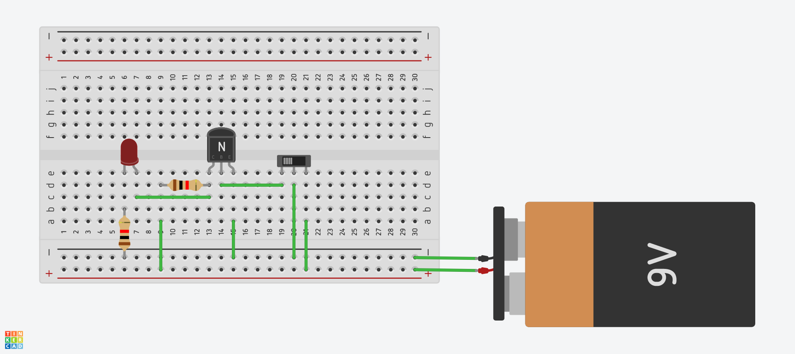

A Transistores Lab 1
Esse laboratório tem como objetivo trabalhar com os conceitos básicos de portas lógicas do tipo RTL realizadas a base de transistores discretos do tipo BJT . Assim como desenvolver o trabalho em grupo via a fragmentação das atividades em módulos.
Materiais¶
Cada grupo receberá:
- Duas protoboards
- Duas baterias 9V
- Jumpers macho-macho
- 12 transistores BJT-N BC337
- 24 resistores de 2k
- 6 LEDs coloridos (Vermelho, amarelo e verde)

Exemplo¶
Para implementarmos uma equação lógica, devemos primeiramente identificar por quais portas lógicas básicas a mesma é constituída: NOT, AND, NAND, OR, NOR, XOR. Por exemplo :
Q = (A.B)+C
É equivalente a:
Q = (A AND B) OR C
Que pode ser fracionada em duas etapas:
I = A AND B Q = I OR C
Podendo ser implementado com uma AND (.) e uma OR (+). Cada porta lógica (AND, OR) por sua vez pode ser implementada a partir de transistores e resistores Resistor-Transistor logic gates - RTL.
- Lógico:

- Implementação:

Note
Esse será o mesmo material utilizado para o Projeto A - Transistores, guardem com vocês.
Simulando¶
Existem basicamente três níveis de simulação: a primeira, puramente lógica utiliza de portas lógicas "ideias" (https://simulator.io/board). Um simulador mais preciso irá utilizar transistores para a implementação dessas portas lógicas porém não leva em consideração todos os fatores físicos-eletrônicos dos componentes (http://w.falstad.com/circuit/). Já um simulador que leva em consideração as propriedades dos componentes é chamado de SPICE e irá gerar uma simulação mais precisa em termos físicos do circuito original (http://w.circuitlab.com).
1. Nível lógico¶
Abra o site:
2. Nível Físico: Transistores¶
O simulador lógico do exemplo está localizado na pasta da aula (03-Transistores) com o nome de 03-Simulador-RTL-Exe1.txt. O mesmo deve ser carregado no site Falstad.
3. Nível Físico: SPICE¶
Abra a página: CircuitLab e simule o circuito.
Trabalhando¶
Realizar em sala
Todos do grupo devem participar!
O grupo deve se organizar e executar da melhor forma possível (com todos participando) os módulos a seguir, utilizando:
- Entradas: Utilizar como entrada do sistema (A,B,C,...) jumpers que estarão hora conectados em GND (0) ou VCC (1).
- Saídas: A saída final do sistema deve ser representada com um LED, sendo aceso indicando lógica 1 e apagado lógica 0.
- Validação: Uma tabela verdade do circuito deve ser apresentada e em aula demonstrado que o circuito representa a tabela.
1a - NOT¶
Cada grupo deve realizar duas implementações do circuito a seguir que representa uma NOT:

Para isso, deveremos utilizar a protoboard e o transistor recebido, a pinagem do transistor pode ser encontrada na página do datasheet em anexo a esse Handout.

Exercício 1a
Levante a tabela verdade do circuito recém montado
Warning
Se você perceber que algum transistor está aquecendo, desconecte a bateria e verifique novamente a montagem. Isso é um sinal que alguma coisa está errada.
Tip
Utilize o datasheet do transistor para entender a montagem
1b - NOT NOT¶
Agora que as duas NOT foram implementadas, testadas e estão funcionado, conecte a saída de uma na entrada da outra. Isso vai fazer com que a saída siga o valor de referência da entrada.

Exercício 1b
Levante a tabela verdade do circuito recém montado
2 - Equação¶
Implemente de forma modular (cada parte do grupo faz uma parte e no final junta-se a fim de montar a equação original) a equação lógica a seguir em um circuito do tipo RTL.
Q = A.(A.(A+B)+A.C)
Exercício 2
Levante a tabela verdade do circuito recém montado
Tip
- Da para simplificar?
- Antes de montar, faça o diagrama de blocos!
- Simular é sempre bem vindo.
Referências¶
A página: http://hyperphysics.phy-astr.gsu.edu/hbase/Electronic/trangate.html#c4 possui exemplos de diversas portas lógicas que podem ser implementadas via RTL. Já o site https://www.electronics-tutorials.ws/logic/logic_1.html possui uma parte teórica mais trabalhada.